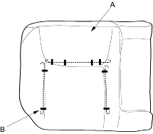
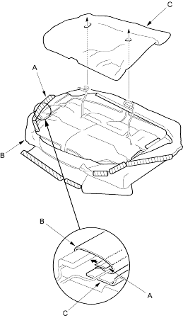

- Pull back the edge of the seat-back cover (A) all the way around and release the clips (B), then remove the seat-back cover. The right seat-back is shown, the left seat-back is similar.

- Install the cover in the reverse order of removal and note these items:
- To prevent wrinkles when installing a seat-back cover, make sure the material is stretched evenly over the pad before securing the hooks and clips.
- On right seat-back with centre shoulder belt: When installing the seat-back frame to the pad, slip the centre belt through the hole in the seat-back cover and pad.
- Replace any clips you removed with new ones. Install them with commercially available upholstery ring pliers.
- Remove the rear seat cushion (see page 20-237).
- Release all the retainer strips (A) from under the seat cushion and fold back the seat cushion cover (B), then remove the cushion mat (C).
